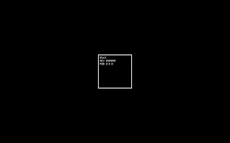
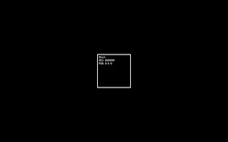

Placement Preparation
Kausik Subramaniyam G
Click to know more about CIT and IT department
This page discusses about various problem solving aspects and methods!
"Its not about having time,
Its about making time"
 

How to solve problems?
- Read the problem
- Understand the problem
- Think of Simple solution
- Apply Brute Force solution
- Test with various test cases
- Look for better solutions
- Iterate until best solution
How to utilise time? - Create Time Tables
Find How ->